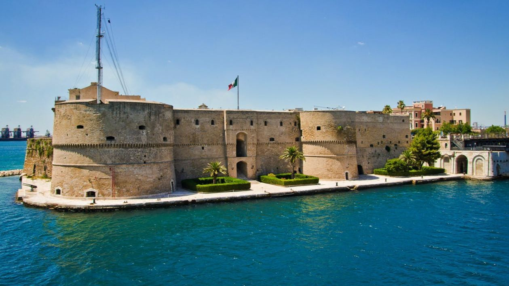
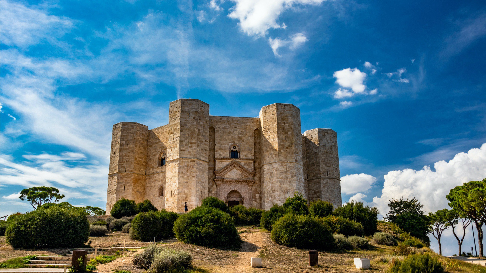
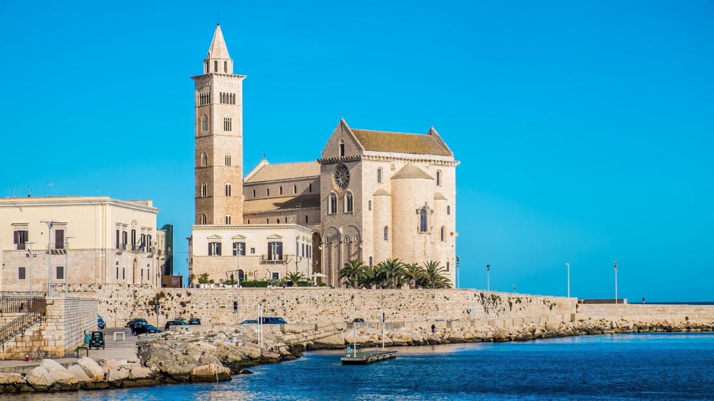

HOME
LA NOSTRA APP
SCOPRI LA PUGLIA
CONTATTACI
Cultura
I luoghi di interesse artistico e culturale della Puglia

Castello Aragonese

Castel del Monte

Cattedrale di Trani
© 2021 Puglia on the Road - Tutti i diritti riservati